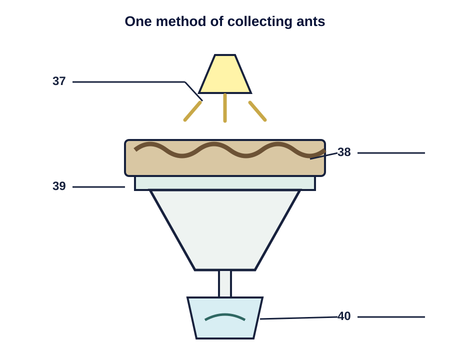

attainment (noun)
Nghĩa: thành tích; mức độ đạt được
Văn cảnh: Japan has a significantly better record in average mathematical attainment.
IELTS READING · WEEK 29
Mã bài: IELTS READING FULL TEST 12 · 3 passages · 40 câu
TRƯỚC KHI VÀO BÀI ĐỌC
READING PASSAGE 1
AJapan has a significantly better record in terms of average mathematical attainment than England and Wales. Large sample international comparisons of pupils’ attainments since the 1960s have established that not only did Japanese pupils at age 13 have better scores of average attainment, but there was also a larger proportion of ‘low’ attainers in England, where, incidentally, the variation in attainment scores was much greater. The percentage of Gross National Product spent on education is reasonably similar in the two countries, so how is this higher and more consistent attainment in maths achieved?
BLower secondary schools in Japan cover three school years, from the seventh grade (age 13) to the ninth grade (age 15). Virtually all pupils at this stage attend state schools: only 3 per cent are in the private sector. Schools are usually modern in design, set well back from the road and spacious inside. Classrooms are large and pupils sit at single desks in rows. Lessons last for a standardised 50 minutes and are always followed by a 10-minute break, which gives the pupils a chance to let off steam. Teachers begin with a formal address and mutual bowing, and then concentrate on whole-class teaching.
↳Classes are large — usually, about 40 — and are unstreamed. Pupils stay in the same class for all lessons throughout the school and develop considerable class identity and loyalty. Pupils attend the school in their own neighbourhood, which in theory removes ranking by school. In practice in Tokyo, because of the relative concentration of schools, there is some competition to get into the ‘better’ school in a particular area.
CTraditional ways of teaching form the basis of the lesson and the remarkably quiet classes take their own notes of the points made and the examples demonstrated. Everyone has their own copy of the textbook supplied by the central education authority, Monbusho, as part of the concept of free compulsory education up to the age of 15. These textbooks are, on the whole, small, presumably inexpensive to produce, but well set out and logically developed . (One teacher was particularly keen to introduce colour and pictures into maths textbooks: he felt this would make them more accessible to pupils brought up in a cartoon culture.) Besides approving textbooks, Monbusho also decides the highly centralised national curriculum and how it is to be delivered.
DLessons all follow the same pattern. At the beginning, the pupils put solutions to the homework on the board, then the teachers comment, correct or elaborate as necessary. Pupils mark their own homework: this is an important principle in Japanese schooling as it enables pupils to see where and why they made a mistake, so that these can be avoided in future. No one minds mistakes or ignorance as long as you are prepared to learn from them After the homework has been discussed, the teacher explains the topic of the lesson, slowly and with a lot of repetition and elaboration. Examples are demonstrated on the board; questions from the textbook are worked through first with the class, and then the class is set questions from the textbook to do individually. Only rarely are supplementary worksheets distributed in a maths class. The impression is that the logical nature of the textbooks and their comprehensive coverage of different types of examples, combined with the relative homogeneity of the class, renders work sheets unnecessary. At this point, the teacher would circulate and make sure that all the pupils were coping well.
EIt is remarkable that large, mixed-ability classes could be kept together for maths throughout all their compulsory schooling from 6 to 15. Teachers say that they give individual help at the end of a lesson or after school, setting extra work if necessary. In observed lessons, any strugglers would be assisted by the teacher or quietly seek help from their neighbour. Carefully fostered class identity makes pupils keen to help each other — anyway, it is in their interests since the class progresses together.
↳This scarcely seems adequate help to enable slow learners to keep up. However, the Japanese attitude towards education runs along the lines of ‘if you work hard enough, you can do almost anything’. Parents are kept closely informed of their children’s progress and will play a part in helping their children to keep up with class, sending them to ‘Juku’ (private evening tuition) if extra help is needed and encouraging them to work harder. It seems to work, at least for 95 per cent of the school population.
FSo what are the major contributing factors in the success of maths teaching? Clearly, attitudes are important. Education is valued greatly in Japanese culture; maths is recognised as an important compulsory subject throughout schooling; and the emphasis is on hard work coupled with a focus on accuracy.
↳Other relevant points relate to the supportive attitude of a class towards slower pupils, the lack of competition within a class, and the positive emphasis on learning for oneself and improving one’s own standard. And the view of repetitively boring lessons and learning the facts by heart, which is sometimes quoted in relation to Japanese classes, may be unfair and unjustified. No poor maths lessons were observed. They were mainly good and one or two were inspirational.
Nghĩa: thành tích; mức độ đạt được
Văn cảnh: Japan has a significantly better record in average mathematical attainment.
Nghĩa: bắt buộc
Văn cảnh: Textbooks are supplied as part of free compulsory education up to the age of 15.
Nghĩa: được quản lý tập trung
Văn cảnh: Monbusho decides the highly centralised national curriculum.
Nghĩa: chương trình học
Văn cảnh: Monbusho decides the national curriculum and how it is delivered.
Nghĩa: không phân lớp theo năng lực
Văn cảnh: Classes are large and are unstreamed.
Nghĩa: gồm học sinh có nhiều trình độ khác nhau
Văn cảnh: Large, mixed-ability classes are kept together for maths.
Nghĩa: giải thích hoặc trình bày thêm chi tiết
Văn cảnh: The teachers comment, correct or elaborate as necessary.
Nghĩa: bổ sung; phụ trợ
Văn cảnh: Only rarely are supplementary worksheets distributed in a maths class.
Nghĩa: tính đồng đều; sự tương đồng trong một nhóm
Văn cảnh: The relative homogeneity of the class renders worksheets unnecessary.
Nghĩa: theo kịp tiến độ hoặc trình độ chung
Văn cảnh: Parents help their children to keep up with class.
ĐÁP ÁNVII
Key / dòng chứa thông tin:“Lower secondary schools in Japan cover three school years, from the seventh grade (age 13) to the ninth grade (age 15). Virtually all pupils at this stage attend state schools: only 3 per cent are in the private sector. Schools are usually modern in design, set well back from the road and spacious inside. Classrooms are large and pupils sit at single desks in rows. Lessons last for a standardised 50 minutes and are always followed by a 10-minute break, which gives the pupils a chance to let off steam. Teachers begin with a formal address and mutual bowing, and then concentrate on whole-class teaching.”
Section B cung cấp thông tin nền tảng về các trường trung học cơ sở ở Nhật: số năm học, loại trường, lớp học, thời lượng tiết học và cách tổ chức lớp. -> vii. Background to middle-years education in Japan.
ĐÁP ÁNI
Key / dòng chứa thông tin:“Everyone has their own copy of the textbook supplied by the central education authority, Monbusho, as part of the concept of free compulsory education up to the age of 15. ... Besides approving textbooks, Monbusho also decides the highly centralised national curriculum and how it is to be delivered.”
Section C mô tả ảnh hưởng của cơ quan giáo dục trung ương Monbusho: cơ quan này cung cấp và phê duyệt sách giáo khoa, đồng thời quyết định chương trình quốc gia và cách giảng dạy. -> i. The influence of Monbusho.
ĐÁP ÁNV
Key / dòng chứa thông tin:“Lessons all follow the same pattern. At the beginning, the pupils put solutions to the homework on the board, then the teachers comment, correct or elaborate as necessary.”
Section D mô tả trình tự điển hình của một tiết Toán: chữa bài tập về nhà, giáo viên giải thích chủ đề, làm ví dụ và cho học sinh luyện tập. -> v. The typical format of a maths lesson.
ĐÁP ÁNII
Key / dòng chứa thông tin:“In observed lessons, any strugglers would be assisted by the teacher or quietly seek help from their neighbor.”
Section E mô tả những cách hỗ trợ học sinh yếu hơn: giáo viên giúp trực tiếp, bạn cùng lớp hỗ trợ, giáo viên trao đổi với phụ huynh và học sinh có thể học thêm ở Juku. -> ii. Helping less successful students.
ĐÁP ÁNVIII
Key / dòng chứa thông tin:“So what are the major contributing factors in the success of maths teaching? Clearly, attitudes are important. Education is valued greatly in Japanese culture;”
Section F: Câu chủ đề nêu câu hỏi về những yếu tố chính góp phần tạo nên thành công của việc dạy Toán ở Nhật; phần còn lại của đoạn giải thích các yếu tố này. -> viii. The key to Japanese successes in maths education.
ĐÁP ÁNYES
Key / dòng chứa thông tin:“Large sample international comparisons of pupils’ attainments since the 1960s have established that not only did Japanese pupils at age 13 have better scores of average attainment, but there was also a larger proportion of “low” attainers in England, where, incidentally, the variation in attainment scores was much greater.”
Câu hỏi: Mức độ chênh lệch thành tích của học sinh học Toán ở Anh rộng hơn ở Nhật. Đoạn A cho biết độ biến thiên về điểm thành tích ở Anh lớn hơn nhiều. -> YES.
ĐÁP ÁNNO
Key / dòng chứa thông tin:“The percentage of Gross National Product spent on education is reasonably similar in the two countries, so how is this higher and more consistent attainment in maths achieved?”
Câu hỏi: Phần trăm GNP được tiêu cho giáo dục thường liên quan đến khả năng Toán của học sinh một nước. Đoạn A, tác giả đưa ra so sánh giữa học sinh ở Anh và ở Nhật. Trong đó có thông tin hai nước đều dành một mức tương đương từ GNP cho giáo dục nhưng có khoảng cách lớn về khả năng Toán của học sinh. -> NO.
ĐÁP ÁNNOT GIVEN
Key / dòng chứa thông tin:“Virtually all pupils at this stage attend state schools: only 3 per cent are in the private sector. Schools are usually modern in design, set well back from the road and spacious inside.”
Câu hỏi: Trường tư ở Nhật hiện đại và rộng rãi hơn trường công. Đoạn B cho biết tỷ lệ học sinh ở trường tư và mô tả trường học nói chung là hiện đại, rộng rãi; không có phép so sánh giữa trường tư và trường công. -> NOT GIVEN.
ĐÁP ÁNNO
Key / dòng chứa thông tin:“Pupils mark their own homework.”
Câu hỏi: Giáo viên chấm bài tập về nhà tại các trường ở Nhật. Đoạn D nói rõ học sinh tự chấm bài tập về nhà của mình. -> NO.
ĐÁP ÁNB
Key / dòng chứa thông tin:“These textbooks are, on the whole, small, presumably inexpensive to produce, but well set out and logically developed. One teacher was particularly keen to introduce colour and pictures into maths textbooks: he felt this would make them more accessible to pupils brought up in a cartoon culture.”
Câu hỏi: Sách giáo khoa Toán ở Nhật có đặc điểm gì? Đoạn C cho biết sách được trình bày tốt, phát triển logic; hình ảnh và màu sắc còn giúp nội dung dễ tiếp cận hơn với học sinh. -> B. well organised and adapted to the needs of the pupils.
ĐÁP ÁNC
Key / dòng chứa thông tin:“After the homework has been discussed, the teacher explains the topic of the lesson, slowly and with a lot of repetition and elaboration.”
Câu hỏi: Khi kiến thức Toán mới được giới thiệu, điều gì xảy ra? Đoạn D nói giáo viên giải thích chủ đề bài học chậm rãi, lặp lại nhiều và diễn giải kỹ. -> C. it is carefully and patiently explained to the students.
ĐÁP ÁNA
Key / dòng chứa thông tin:“Parents are kept closely informed of their children’s progress and will play a part in helping their children to keep up with class, sending them to “Juku” (private evening tuition) if extra help is needed and encouraging them to work harder.”
Câu hỏi: Trường học làm thế nào với học sinh gặp khó khăn. Nội dung về học sinh kém hơn nằm ở đoạn E. Các phương pháp của trường học ở Nhật Bản: giáo viên dạy kèm thêm, học sinh giúp đỡ nhau, lớp học thêm. -> A. They are given appropriate supplementary tuition.
ĐÁP ÁNC
Key / dòng chứa thông tin:“Maths is recognised as an important compulsory subject throughout schooling; and the emphasis is on hard work coupled with a focus on accuracy.”
Câu hỏi: Lý do học sinh Nhật thường đạt kết quả tương đối tốt môn Toán. Lý giải của tác giả cho kết quả tốt của học sinh Nhật trong môn Toán nằm ở đoạn F. Tác giả cho rằng môn Toán được cho là môn bắt buộc và học sinh được khuyến khích học chăm chỉ, làm bài chính xác. -> C. Much effort is made and correct answers are emphasised.
READING PASSAGE 2
AThe continuous and reckless use of synthetic chemicals for the control of pests which pose a threat to agricultural crops and human health is proving to be counter-productive. Apart from engendering widespread ecological disorders, pesticides have contributed to the emergence of a new breed of chemical-resistant, highly lethal superbugs.
BAccording to a recent study by the Food and Agriculture Organisation (FAO), more than 300 species of agricultural pests have developed resistance to a wide range of potent chemicals. Not to be left behind are the disease-spreading pests, about 100 species of which have become immune to a variety of insecticides now in use.
COne glaring disadvantage of pesticides’ application is that, while destroying harmful pests, they also wipe out many useful non-targeted organisms, which keep the growth of the pest population in check. This results in what agro-ecologists call the ‘treadmill syndrome’. Because of their tremendous breeding potential and genetic diversity, many pests are known to withstand synthetic chemicals and bear offspring with a built-in resistance to pesticides.
DThe havoc that the `treadmill syndrome’ can bring about is well illustrated by what happened to cotton farmers in Central America. In the early 1940s, basking in the glory of chemical based intensive agriculture, the farmers avidly took to pesticides as a sure measure to boost crop yield. The insecticide was applied eight times a year in the mid-1940s, rising to 28 in a season in the mid-1950s, following the sudden proliferation of three new varieties of chemical-resistant pests.
EBy the mid-1960s, the situation took an alarming turn with the outbreak of four more new pests, necessitating pesticide spraying to such an extent that 50% of the financial outlay on cotton production was accounted for by pesticides. In the early 1970s, the spraying frequently reached 70 times a season as the farmers were pushed to the wall by the invasion of genetically stronger insect species.
FMost of the pesticides in the market today remain inadequately tested for properties that cause cancer and mutations as well as for other adverse effects on health, says a study by United States environmental agencies. The United States National Resource Defense Council has found that DDT was the most popular of a long list of dangerous chemicals in use.
GIn the face of the escalating perils from indiscriminate applications of pesticides, a more effective and ecologically sound strategy of biological control, involving the selective use of natural enemies of the pest population, is fast gaining popularity — though, as yet, it is a new field with limited potential. The advantage of biological control in contrast to other methods is that it provides a relatively low-cost, perpetual control system with a minimum of detrimental side-effects. When handled by experts, bio-control is safe, non-polluting and self-dispersing.
HThe Commonwealth Institute of Biological Control (CIBC) in Bangalore, with its global network of research laboratories and field stations, is one of the most active, non-commercial research agencies engaged in pest control by setting natural predators against parasites. CIBC also serves as a clearing-house for the export and import of biological agents for pest control worldwide.
ICIBC successfully used a seed-feeding weevil, native to Mexico, to control the obnoxious parthenium weed, known to exert devious influence on agriculture and human health in both India and Australia. Similarly, the Hyderabad-based Regional Research Laboratory (RRL), supported by CIBC, is now trying out an Argentinian weevil for the eradication of water hyacinth, another dangerous weed, which has become a nuisance in many parts of the world. According to Mrs Kaiser Jamil of RRL, `The Argentinian weevil does not attack any other plant and a pair of adult bugs could destroy the weed in 4-5 days.’ CIBC is also perfecting the technique for breeding parasites that prey on ‘disapene scale’ insects — notorious defoliants of fruit trees in the US and India.
JHow effectively biological control can be pressed into service is proved by the following examples. In the late 1960s, when Sri Lanka’s flourishing coconut groves were plagued by leaf-miaing hispides, a larval parasite imported from Singapore brought the pest under control. A natural predator indigenous to India, Neodumetia sangawani, was found useful in controlling the Rhodes grass-scale insect that was devouring forage grass in many parts of the US. By using Neochetina bruci, a beetle native to Brazil, scientists at Kerala Agricultural University freed a 12-kilometrelong canal from the clutches of the weed Salvinia molesta, popularly called `African Payal’ in Kerala. About 30,000 hectares of rice fields in Kerala are infested by this weed.
Nghĩa: phản tác dụng
Văn cảnh: The reckless use of synthetic chemicals is proving to be counter-productive.
Nghĩa: kháng hóa chất
Văn cảnh: Pesticides have contributed to a new breed of chemical-resistant superbugs.
Nghĩa: thuốc trừ sâu; hóa chất diệt sinh vật gây hại
Văn cảnh: Pesticides also wipe out many useful non-targeted organisms.
Nghĩa: sinh vật gây hại cho cây trồng hoặc sức khỏe
Văn cảnh: Synthetic chemicals are used to control pests that threaten crops and human health.
Nghĩa: tiêu diệt hoàn toàn
Văn cảnh: Pesticides wipe out many useful non-targeted organisms.
Nghĩa: chịu được; chống lại mà không bị tác động
Văn cảnh: Many pests can withstand synthetic chemicals.
Nghĩa: sự gia tăng nhanh về số lượng
Văn cảnh: Spraying increased after the sudden proliferation of chemical-resistant pests.
Nghĩa: bừa bãi; không chọn lọc
Văn cảnh: The perils come from indiscriminate applications of pesticides.
Nghĩa: có hại; gây bất lợi
Văn cảnh: Biological control has a minimum of detrimental side-effects.
Nghĩa: loài săn mồi tự nhiên
Văn cảnh: A natural predator was used to control the grass-scale insect.
ĐÁP ÁNB
Key / dòng chứa thông tin:“Apart from engendering widespread ecological disorders, pesticides have contributed to the emergence of a new breed of chemical-resistant, highly lethal superbugs.”
Câu hỏi: Việc dùng thuốc trừ sâu hại đã góp phần gây... Tác hại của việc dùng pesticides được nhắc đến trong đoạn đầu tiên. Tác giả nói việc này tạo ra "ecological disorders" (rối loạn sinh thái) và góp phần tạo ra các loài kháng thuốc trừ sâu hại. -> B. an imbalance in many ecologies around the world.
ĐÁP ÁNA
Key / dòng chứa thông tin:“According to a recent study by the Food and Agriculture Organisation (FAO), more than 300 species of agricultural pests have developed resistance to a wide range of potent chemicals.”
Câu hỏi: Tổ chức FAO đã đếm được hơn 300 loài gây hại cho nông nghiệp... Keyword "300 species" xuất hiện ở đoạn thứ 2 trong câu nói rằng theo tổ chức này, hơn 300 loài đã có khả năng kháng chất hoá học. -> A. are no longer responding to most pesticides in use.
ĐÁP ÁND
Key / dòng chứa thông tin:“In the early 1940s, basking in the glory of chemical-based intensive agriculture, the farmers avidly took to pesticides as a sure measure to boost crop yield.”
Câu hỏi: Người trồng bông ở Trung Mỹ bắt đầu dùng thuốc trừ sâu hại do đâu/để làm gì. Keywords về cotton farmers ở Central America có ở đoạn thứ 4. Trong đó nói người trồng bông bắt đầu dùng chất hoá học nhằm tăng sản lượng. -> D. to ensure more cotton was harvested from each crop.
ĐÁP ÁND
Key / dòng chứa thông tin:“By the mid-1960s, the situation took an alarming turn with the outbreak of four more new pests, necessitating pesticide spraying to such an extent that 50% of the financial outlay on cotton production was accounted for by pesticides.”
Câu hỏi: Đến giữa những năm 1960s, người trồng bông ở Trung Mỹ phát hiện rằng pesticides... Keyword "by the mid-1960s" giúp xác định vị trí thông tin ở đầu đoạn 5. Ở đây nói khi đó xuất hiện dịch do 4 loại sâu bệnh, khiến người nông dân càng dùng nhiều pesticides đến mức 50% chi phí trồng là pesticides. -> D. were costing 50% of the total amount they spent on their crops.
ĐÁP ÁNNOT GIVEN
Key / dòng chứa thông tin:“According to a recent study by the Food and Agriculture Organisation (FAO), more than 300 species of agricultural pests have developed resistance to a wide range of potent chemicals. Not to be left behind are the disease-spreading pests, about 100 species of which have become immune to a variety of insecticides now in use.”
Câu hỏi: Sâu truyền bệnh phản ứng với thuốc trừ sâu nhanh hơn sâu hại nông nghiệp. Đoạn 2 nêu số loài trong mỗi nhóm đã kháng thuốc nhưng không so sánh tốc độ phản ứng hay phát triển khả năng kháng. -> NOT GIVEN.
ĐÁP ÁNYES
Key / dòng chứa thông tin:“Many pests are known to withstand synthetic chemicals and bear offspring with a built-in resistance to pesticides.”
Câu hỏi: Một số sâu hại hiện sinh ra đã có khả năng kháng thuốc trừ sâu. Đoạn 3 cho biết sâu hại có thể sinh ra thế hệ con mang sẵn khả năng kháng thuốc (“a built-in resistance”). -> YES.
ĐÁP ÁNNO
Key / dòng chứa thông tin:“In the face of the escalating perils from indiscriminate applications of pesticides, a more effective and ecologically sound strategy of biological control, involving the selective use of natural enemies of the pest population, is fast gaining popularity.”
Câu hỏi: Kiểm soát sinh học dùng chất tổng hợp để thay đổi cấu trúc gen của thế hệ sâu hại sau. Đoạn 7 định nghĩa “biological control” là việc sử dụng có chọn lọc các “natural enemies” (thiên địch) của quần thể sâu hại, không phải dùng chất hóa học tổng hợp. -> NO.
ĐÁP ÁNYES
Key / dòng chứa thông tin:“When handled by experts, bio-control is safe, non-polluting and self-dispersing.”
Câu hỏi: Trong một số điều kiện, kiểm soát sinh học không gây nguy hiểm. Đoạn 7 nói khi do chuyên gia thực hiện, bio-control an toàn, không gây ô nhiễm và tự phát tán. -> YES.
ĐÁP ÁND
Key / dòng chứa thông tin:“CIBC is also perfecting the technique for breeding parasites that prey on “disapene scale” insects – notorious defoliants of fruit trees in the US and India.”
Câu hỏi: Disapene scale insects ăn gì? Cuối đoạn 9 cho biết chúng là “notorious defoliants of fruit trees” (loài phá lá cây ăn quả khét tiếng). -> D. fruit trees.
ĐÁP ÁNH
Key / dòng chứa thông tin:“A natural predator indigenous to India, Neodumetia sangawani, was found useful in controlling the Rhodes grass-scale insect.”
Câu hỏi: Neodumetia sangawani kiểm soát loài nào? Keyword "Neodumetia sangawani" giúp xác định vị trí thông tin ở đoạn cuối. Loài này có tác dụng kiểm soát "Rhodes grass-scale insect”. -> H. grass-scale insects.
ĐÁP ÁNC
Key / dòng chứa thông tin:“In the late 1960s, when Sri Lanka’s flourishing coconut groves were plagued by leaf-mining hispides, a larval parasite imported from Singapore brought the pest under control.”
Câu hỏi: Leaf-mining hispides phá hoại loại cây nào? Đoạn cuối cho biết những vườn dừa ở Sri Lanka (“coconut groves”) bị leaf-mining hispides tàn phá. -> C. coconut trees.
ĐÁP ÁNE
Key / dòng chứa thông tin:“The Hyderabad-based Regional Research Laboratory (RRL), supported by CIBC, is now trying out an Argentinian weevil for the eradication of water hyacinth, another dangerous weed.”
Câu hỏi: Một con weevil Argentina có thể diệt cái gì. Keyword "Argentinian weevil" được tác giả nói đến ở đoạn 9: bọ này diệt "water hyacinth" trong 4–5 ngày. -> E. water hyacinth.
ĐÁP ÁNB
Key / dòng chứa thông tin:“About 30,000 hectares of rice fields in Kerala are infested by this weed.”
Câu hỏi: Salvinia molesta gây hại cho đâu? Keyword "Salvinia molesta" được nói đến ở đoạn cuối là loại hại "rice fields" (ruộng lúa). -> B. rice fields.
READING PASSAGE 3
ACollecting ants can be as simple as picking up stray ones and placing them in a glass jar, or as complicated as completing an exhaustive survey of all species present in an area and estimating their relative abundances. The exact method used will depend on the final purpose of the collections. For taxonomy, or classification, long series, from a single nest, which contain all castes (workers, including majors and minors, and, if present, queens and males) are desirable, to allow the determination of variation within species. For ecological studies, the most important factor is collecting identifiable samples of as many of the different species present as possible. Unfortunately, these methods are not always compatible. The taxonomist sometimes overlooks whole species in favour of those groups currently under study, while the ecologist often collects only a limited number of specimens of each species, thus reducing their value for taxonomic investigations.
BTo collect as wide a range of species as possible, several methods must be used. These include hand collecting, using baits to attract the ants, ground litter sampling, and the use of pitfall traps. Hand collecting consists of searching for ants everywhere they are likely to occur. This includes on the ground, under rocks, logs or other objects on the ground, in rotten wood on the ground or on trees, in vegetation, on tree trunks and under bark. When possible, collections should be made from nests or foraging columns and at least 20 to 25 individuals collected. This will ensure that all individuals are of the same species, and so increase their value for detailed studies. Since some species are largely nocturnal, collecting should not be confined to daytime. Specimens are collected using an aspirator (often called a pooter), forceps, a fine, moistened paint brush, or fingers, if the ants are known not to sting. Individual insects are placed in plastic or glass tubes (1.5-3.0 ml capacity for small ants, 5-8 ml for larger ants) containing 75% to 95% ethanol. Plastic tubes with secure tops are better than glass because they are lighter, and do not break as easily if mishandled.
CBaits can be used to attract and concentrate foragers. This often increases the number of individuals collected and attracts species that are otherwise elusive. Sugars and meats or oils will attract different species and a range should be utilised. These baits can be placed either on the ground or on the trunks of trees or large shrubs. When placed on the ground, baits should be situated on small paper cards or other flat, light-coloured surfaces, or in test-tubes or vials. This makes it easier to spot ants and to capture them before they can escape into the surrounding leaf litter.
DMany ants are small and forage primarily in the layer of leaves and other debris on the ground. Collecting these species by hand can be difficult. One of the most successful ways to collect them is to gather the leaf litter in which they are foraging and extract the ants from it. This is most commonly done by placing leaf litter on a screen over a large funnel, often under some heat. As the leaf litter dries from above, ants (and other animals) move downward and eventually fall out the bottom and are collected in alcohol placed below the funnel. This method works especially well in rainforests and marshy areas. A method of improving the catch when using a funnel is to sift the leaf litter through a coarse screen before placing it above the funnel. This will concentrate the litter and remove larger leaves and twigs. It will also allow more litter to be sampled when using a limited number of funnels.
EThe pitfall trap is another commonly used tool for collecting ants. A pitfall trap can be any small container placed on the ground with the top level with the surrounding surface and filled with a preservative. Ants are collected when they fall into the trap while foraging. The diameter of the traps can vary from about 18 mm to 10 cm and the number used can vary from a few to several hundred. The size of the traps used is influenced largely by personal preference (although larger sizes are generally better), while the number will be determined by the study being undertaken. The preservative used is usually ethylene glycol or propylene glycol, as alcohol will evaporate quickly and the traps will dry out. One advantage of pitfall traps is that they can be used to collect over a period of time with minimal maintenance and intervention. One disadvantage is that some species are not collected as they either avoid the traps or do not commonly encounter them while foraging.

Nghĩa: mẫu vật dùng để nghiên cứu
Văn cảnh: The ecologist often collects only a limited number of specimens of each species.
Nghĩa: phân loại học
Văn cảnh: For taxonomy, long series from a single nest are desirable.
Nghĩa: nhóm cá thể có chức năng riêng trong đàn côn trùng
Văn cảnh: A series containing all castes allows researchers to study variation within a species.
Nghĩa: đi tìm thức ăn
Văn cảnh: Many ants forage primarily in the layer of leaves and other debris.
Nghĩa: khó tìm thấy hoặc khó bắt
Văn cảnh: Baits attract species that are otherwise elusive.
Nghĩa: lớp lá mục trên mặt đất
Văn cảnh: Ants can escape into the surrounding leaf litter.
Nghĩa: lưới sàng mắt thô
Văn cảnh: The leaf litter is sifted through a coarse screen before being placed above the funnel.
Nghĩa: bẫy hố dùng để thu mẫu côn trùng
Văn cảnh: The pitfall trap is a commonly used tool for collecting ants.
Nghĩa: chất bảo quản mẫu vật
Văn cảnh: A pitfall trap is filled with a preservative.
ĐÁP ÁNTRUE
Key / dòng chứa thông tin:“For taxonomy, or classification, long series from a single nest, which contain all castes (workers, including majors and minors, and, if present, queens and males), are desirable, to allow the determination of variation within species.”
Câu hỏi: Nghiên cứu taxonomy (phân loại) dựa vào việc so sánh các thành viên trong một đàn kiến. Bài đọc nói về yêu cầu cho taxonomy ở đoạn đầu. Ở đây nói taxonomy thì cần nhiều cá thể kiến từ cùng một tổ để xem sự khác biệt giữa các con cùng loài. -> TRUE.
ĐÁP ÁNNOT GIVEN
Câu hỏi: Những loài kiến mới thường được phát hiện bởi taxonomists. Trong bài không nhắc đến việc phát hiện loài kiến mới. -> NOT GIVEN.
ĐÁP ÁNTRUE
Key / dòng chứa thông tin:“For ecological studies, the most important factor is collecting identifiable samples of as many of the different species present as possible.”
Câu hỏi: Sự đa dạng là tiêu chí chính khi thu thập mẫu cho nghiên cứu sinh thái. Đoạn 1 cho biết yếu tố quan trọng nhất là thu được mẫu có thể nhận dạng của càng nhiều loài khác nhau càng tốt. -> TRUE.
ĐÁP ÁNFALSE
Key / dòng chứa thông tin:“Unfortunately, these methods are not always compatible.”
Câu hỏi: Một cuộc thu mẫu kiến thường có thể được sử dụng cho cả mục đích phân loại và nghiên cứu sinh thái. Đoạn 1 nói về thu thập mẫu cho các mục đích phân loại và nghiên cứu sinh thái. Ý chính của đoạn này là hai mục tiêu này trái ngược về cách tiếp cận. -> Thường một cuộc thu mẫu không dùng cho cả hai mục đích được -> FALSE.
ĐÁP ÁNA
Key / dòng chứa thông tin:“When possible, collections should be made from nests or foraging columns and at least 20 to 25 individuals collected.”
Câu hỏi: Tốt nhất nên lấy mẫu từ một nhóm kiến thay vì bắt từng cá thể riêng lẻ. Đoạn về “hand collecting” khuyên lấy mẫu từ tổ hoặc cột kiến kiếm ăn và thu ít nhất 20–25 cá thể. -> A. hand collecting.
ĐÁP ÁNC
Key / dòng chứa thông tin:“This method works especially well in rain forests and marshy areas.”
Câu hỏi: Phương pháp đặc biệt hiệu quả trong môi trường ẩm ướt. Đoạn về lấy mẫu lớp lá mục cho biết phương pháp này đặc biệt hiệu quả trong rừng mưa và khu vực đầm lầy. -> C. sampling ground litter.
ĐÁP ÁNB
Key / dòng chứa thông tin:“This often increases the number of individuals collected and attracts species that are otherwise elusive.”
Câu hỏi: Phương pháp phù hợp với những loài khó tìm. Đoạn về dùng mồi nhử cho biết cách này thu hút các loài vốn khó phát hiện (“otherwise elusive”). -> B. using bait.
ĐÁP ÁND
Key / dòng chứa thông tin:“One advantage of pitfall traps is that they can be used to collect over a period of time with minimal maintenance and intervention.”
Câu hỏi: Phương pháp đòi hỏi ít thời gian và công sức. Ưu điểm của bẫy hố là có thể thu mẫu trong một thời gian dài mà cần rất ít bảo trì và can thiệp. -> D. using a pitfall trap.
ĐÁP ÁNA
Key / dòng chứa thông tin:“Individual insects are placed in plastic or glass tubes.”
Câu hỏi: Mỗi mẫu vật được đặt trong một vật chứa riêng. Đoạn về “hand collecting” nói từng cá thể côn trùng được đặt trong ống nhựa hoặc ống thủy tinh. -> A. hand collecting.
ĐÁP ÁND
Key / dòng chứa thông tin:“The preservative used is usually ethylene glycol or propylene glycol, as alcohol will evaporate quickly and the traps will dry out.”
Câu hỏi: Nên dùng chất bảo quản không chứa cồn. Đoạn về bẫy hố cho biết chất bảo quản thường là ethylene glycol hoặc propylene glycol vì cồn bay hơi nhanh và làm bẫy khô. -> D. pitfall trap.
ĐÁP ÁNHEAT
Key / dòng chứa thông tin:“This is most commonly done by placing leaf litter on a screen over a large funnel, often under some heat.”
Các câu 37–40 yêu cầu hoàn thành sơ đồ của phương pháp dùng “funnel” (phễu), được mô tả ở đoạn về lấy mẫu trong lớp lá mục. Câu 37 yêu cầu tìm thứ nằm phía trên hệ thống. Bài cho biết phễu thường được đặt “under some heat”. -> Đáp án: heat.
ĐÁP ÁNLEAF LITTER
Key / dòng chứa thông tin:“This is most commonly done by placing leaf litter on a screen over a large funnel, often under some heat.”
Câu này hỏi vật liệu được đặt trong hệ thống. Đoạn 4 cho biết “leaf litter” (lớp lá mục) được đặt trên một tấm lưới ở phía trên phễu. -> Đáp án: leaf litter.
ĐÁP ÁN(COARSE) SCREEN
Chấp nhận thêm: SCREEN / COARSE SCREEN
Key / dòng chứa thông tin:“This is most commonly done by placing leaf litter on a screen over a large funnel.”
Câu này hỏi tên lớp nằm ngang đặt trên phễu. Đoạn 4 nói “leaf litter” được đặt trên một “screen” (tấm lưới) ở phía trên phễu lớn. Key chấp nhận “screen” hoặc “coarse screen”. -> Đáp án: (coarse) screen.
ĐÁP ÁNALCOHOL
Key / dòng chứa thông tin:“As the leaf litter dries from above, ants (and other animals) move downward and eventually fall out the bottom and are collected in alcohol placed below the funnel.”
Câu này hỏi chất lỏng nằm dưới phễu trong hệ thống. Kiến rơi qua phễu và được thu vào “alcohol” (cồn) đặt bên dưới. -> Đáp án: alcohol.